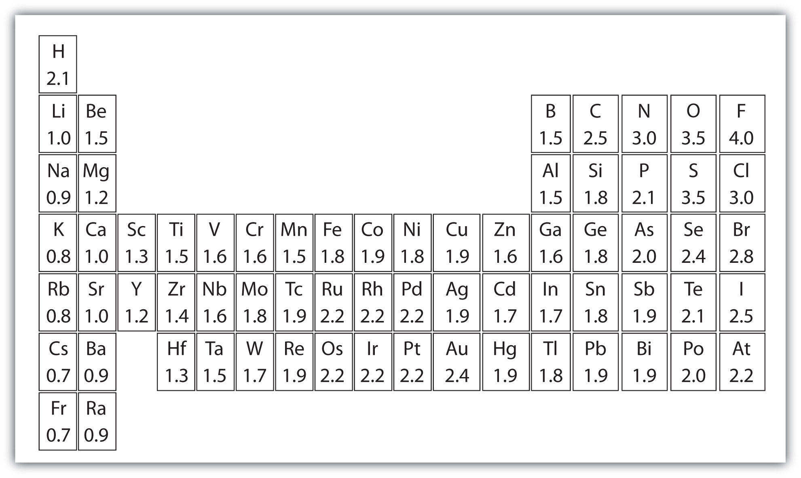

Diamond is the hardest natural material known on Earth. Yet diamond is just pure carbon. What is special about this element that makes diamond so hard?
Bonds. Chemical bonds.
In a perfect diamond crystal, each C atom makes four connections—bonds—to four other C atoms in a three-dimensional matrix. Four is the greatest number of bonds that is commonly made by atoms, so C atoms maximize their interactions with other atoms. This three-dimensional array of connections extends throughout the diamond crystal, making it essentially one large molecule. Breaking a diamond means breaking every bond at once.
Also, the bonds are moderately strong. There are stronger interactions known, but the carbon-carbon connection is fairly strong itself. Not only does a person have to break many connections at once, but also the bonds are strong connections from the start.
There are other substances that have similar bonding arrangements as diamond does. Silicon dioxide and boron nitride have some similarities, but neither of them comes close to the ultimate hardness of diamond.
How do atoms make compounds? Typically they join together in such a way that they lose their identities as elements and adopt a new identity as a compound. These joins are called chemical bonds. But how do atoms join together? Ultimately, it all comes down to electrons. Before we discuss how electrons interact, we need to introduce a tool to simply illustrate electrons in an atom.
In almost all cases, chemical bonds are formed by interactions of valence electrons in atoms. To facilitate our understanding of how valence electrons interact, a simple way of representing those valence electrons would be useful.
A Lewis electron dot diagramA representation of the valence electrons of an atom that uses dots around the symbol of the element. (or electron dot diagram or a Lewis diagram or a Lewis structure) is a representation of the valence electrons of an atom that uses dots around the symbol of the element. The number of dots equals the number of valence electrons in the atom. These dots are arranged to the right and left and above and below the symbol, with no more than two dots on a side. (It does not matter what order the positions are used.) For example, the Lewis electron dot diagram for hydrogen is simply

Because the side is not important, the Lewis electron dot diagram could also be drawn as follows:
The electron dot diagram for helium, with two valence electrons, is as follows:
By putting the two electrons together on the same side, we emphasize the fact that these two electrons are both in the 1s subshell; this is the common convention we will adopt, although there will be exceptions later. The next atom, lithium, has an electron configuration of 1s22s1, so it has only one electron in its valence shell. Its electron dot diagram resembles that of hydrogen, except the symbol for lithium is used:
Beryllium has two valence electrons in its 2s shell, so its electron dot diagram is like that of helium:

The next atom is boron. Its valence electron shell is 2s22p1, so it has three valence electrons. The third electron will go on another side of the symbol:
Again, it does not matter on which sides of the symbol the electron dots are positioned.
For carbon, there are four valence electrons, two in the 2s subshell and two in the 2p subshell. As usual, we will draw two dots together on one side, to represent the 2s electrons. However, conventionally, we draw the dots for the two p electrons on different sides. As such, the electron dot diagram for carbon is as follows:
With N, which has three p electrons, we put a single dot on each of the three remaining sides:
For oxygen, which has four p electrons, we now have to start doubling up on the dots on one other side of the symbol. When doubling up electrons, make sure that a side has no more than two electrons.
Fluorine and neon have seven and eight dots, respectively:
With the next element, sodium, the process starts over with a single electron because sodium has a single electron in its highest-numbered shell, the n = 3 shell. By going through the periodic table, we see that the Lewis electron dot diagrams of atoms will never have more than eight dots around the atomic symbol.
What is the Lewis electron dot diagram for each element?
Solution
The valence electron configuration for aluminum is 3s23p1. So it would have three dots around the symbol for aluminum, two of them paired to represent the 3s electrons:

The valence electron configuration for selenium is 4s24p4. In the highest-numbered shell, the n = 4 shell, there are six electrons. Its electron dot diagram is as follows:
Test Yourself
What is the Lewis electron dot diagram for each element?
Answer
For atoms with partially filled d or f subshells, these electrons are typically omitted from Lewis electron dot diagrams. For example, the electron dot diagram for iron (valence shell configuration 4s23d6) is as follows:

Elements in the same column of the periodic table have similar Lewis electron dot diagrams because they have the same valence shell electron configuration. Thus the electron dot diagrams for the first column of elements are as follows:

Monatomic ions are atoms that have either lost (for cations) or gained (for anions) electrons. Electron dot diagrams for ions are the same as for atoms, except that some electrons have been removed for cations, while some electrons have been added for anions. Thus in comparing the electron configurations and electron dot diagrams for the Na atom and the Na+ ion, we note that the Na atom has a single valence electron in its Lewis diagram, while the Na+ ion has lost that one valence electron:

Technically, the valence shell of the Na+ ion is now the n = 2 shell, which has eight electrons in it. So why do we not put eight dots around Na+? Conventionally, when we show electron dot diagrams for ions, we show the original valence shell of the atom, which in this case is the n = 3 shell and empty in the Na+ ion.
In making cations, electrons are first lost from the highest numbered shell, not necessarily the last subshell filled. For example, in going from the neutral Fe atom to the Fe2+ ion, the Fe atom loses its two 4s electrons first, not its 3d electrons, despite the fact that the 3d subshell is the last subshell being filled. Thus we have

Anions have extra electrons when compared to the original atom. Here is a comparison of the Cl atom with the Cl− ion:
What is the Lewis electron dot diagram for each ion?
Solution
Having lost its two original valence electrons, the Lewis electron dot diagram is just Ca2+.
Ca2+The O2− ion has gained two electrons in its valence shell, so its Lewis electron dot diagram is as follows:
Test Yourself
The valence electron configuration of thallium, whose symbol is Tl, is 6s25d106p1. What is the Lewis electron dot diagram for the Tl+ ion?
Answer
Explain why the first two dots in a Lewis electron dot diagram are drawn on the same side of the atomic symbol.
Is it necessary for the first dot around an atomic symbol to go on a particular side of the atomic symbol?
What column of the periodic table has Lewis electron dot diagrams with two electrons?
What column of the periodic table has Lewis electron dot diagrams that have six electrons in them?
Draw the Lewis electron dot diagram for each element.
Draw the Lewis electron dot diagram for each element.
Draw the Lewis electron dot diagram for each element.
Draw the Lewis electron dot diagram for each element.
Draw the Lewis electron dot diagram for each ion.
Draw the Lewis electron dot diagram for each ion.
Draw the Lewis electron dot diagram for each ion.
Draw the Lewis electron dot diagram for each ion.
The first two electrons in a valence shell are s electrons, which are paired.
the second column of the periodic table


In Section 9.1 "Lewis Electron Dot Diagrams", we saw how ions are formed by losing electrons to make cations or by gaining electrons to form anions. The astute reader may have noticed something: Many of the ions that form have eight electrons in their valence shell. Either atoms gain enough electrons to have eight electrons in the valence shell and become the appropriately charged anion, or they lose the electrons in their original valence shell; the lower shell, now the valence shell, has eight electrons in it, so the atom becomes positively charged. For whatever reason, having eight electrons in a valence shell is a particularly energetically stable arrangement of electrons. The trend that atoms like to have eight electrons in their valence shell is called the octet ruleThe trend that atoms like to have eight electrons in their valence shell.. When atoms form compounds, the octet rule is not always satisfied for all atoms at all times, but it is a very good rule of thumb for understanding the kinds of bonding arrangements that atoms can make.
It is not impossible to violate the octet rule. Consider sodium: in its elemental form, it has one valence electron and is stable. It is rather reactive, however, and does not require a lot of energy to remove that electron to make the Na+ ion. We could remove another electron by adding even more energy to the ion, to make the Na2+ ion. However, that requires much more energy than is normally available in chemical reactions, so sodium stops at a 1+ charge after losing a single electron. It turns out that the Na+ ion has a complete octet in its new valence shell, the n = 2 shell, which satisfies the octet rule. The octet rule is a result of trends in energies and is useful in explaining why atoms form the ions that they do.
Now consider an Na atom in the presence of a Cl atom. The two atoms have these Lewis electron dot diagrams and electron configurations:
For the Na atom to obtain an octet, it must lose an electron; for the Cl atom to gain an octet, it must gain an electron. An electron transfers from the Na atom to the Cl atom:

resulting in two ions—the Na+ ion and the Cl− ion:

Both species now have complete octets, and the electron shells are energetically stable. From basic physics, we know that opposite charges attract. This is what happens to the Na+ and Cl− ions:
where we have written the final formula (the formula for sodium chloride) as per the convention for ionic compounds, without listing the charges explicitly. The attraction between oppositely charged ions is called an ionic bondThe attraction between oppositely charged ions., and it is one of the main types of chemical bonds in chemistry. Ionic bonds are caused by electrons transferring from one atom to another.
In electron transfer, the number of electrons lost must equal the number of electrons gained. We saw this in the formation of NaCl. A similar process occurs between Mg atoms and O atoms, except in this case two electrons are transferred:

The two ions each have octets as their valence shell, and the two oppositely charged particles attract, making an ionic bond:

Remember, in the final formula for the ionic compound, we do not write the charges on the ions.
What about when an Na atom interacts with an O atom? The O atom needs two electrons to complete its valence octet, but the Na atom supplies only one electron:
The O atom still does not have an octet of electrons. What we need is a second Na atom to donate a second electron to the O atom:

These three ions attract each other to give an overall neutral-charged ionic compound, which we write as Na2O. The need for the number of electrons lost being equal to the number of electrons gained explains why ionic compounds have the ratio of cations to anions that they do. This is required by the law of conservation of matter as well.
With arrows, illustrate the transfer of electrons to form calcium chloride from Ca atoms and Cl atoms.
Solution
A Ca atom has two valence electrons, while a Cl atom has seven electrons. A Cl atom needs only one more to complete its octet, while Ca atoms have two electrons to lose. Thus we need two Cl atoms to accept the two electrons from one Ca atom. The transfer process looks as follows:
The oppositely charged ions attract each other to make CaCl2.
Test Yourself
With arrows, illustrate the transfer of electrons to form potassium sulfide from K atoms and S atoms.
Answer
The strength of ionic bonding depends on two major characteristics: the magnitude of the charges and the size of the ion. The greater the magnitude of the charge, the stronger the ionic bond. The smaller the ion, the stronger the ionic bond (because a smaller ion size allows the ions to get closer together). The measured strength of ionic bonding is called the lattice energyThe measured strength of ionic bonding.. Some lattice energies are given in Table 9.1 "Lattice Energies of Some Ionic Compounds".
Table 9.1 Lattice Energies of Some Ionic Compounds
| Compound | Lattice Energy (kJ/mol) |
|---|---|
| LiF | 1,036 |
| LiCl | 853 |
| NaCl | 786 |
| NaBr | 747 |
| MgF2 | 2,957 |
| Na2O | 2,481 |
| MgO | 3,791 |
The element sodium (part [a] in the accompanying figure) is a very reactive metal; given the opportunity, it will react with the sweat on your hands and form sodium hydroxide, which is a very corrosive substance. The element chlorine (part [b] in the accompanying figure) is a pale yellow, corrosive gas that should not be inhaled due to its poisonous nature. Bring these two hazardous substances together, however, and they react to make the ionic compound sodium chloride (part [c] in the accompanying figure), known simply as salt.
Figure 9.1 Sodium + Chlorine = Sodium Chloride

(a) Sodium is a very reactive metal. (b) Chlorine is a pale yellow, noxious gas. (c) Together, sodium and chlorine make sodium chloride—salt—which is necessary for our survival.
Source: Photo on the left courtesy of Greenhorn1, http://commons.wikimedia.org/wiki/File:Sodium.jpg. Photo in the center courtesy of Benjah-bmm27, http://commons.wikimedia.org/wiki/File:Chlorine-sample.jpg.
Salt is necessary for life. Na+ ions are one of the main ions in the human body and are necessary to regulate the fluid balance in the body. Cl− ions are necessary for proper nerve function and respiration. Both of these ions are supplied by salt. The taste of salt is one of the fundamental tastes; salt is probably the most ancient flavoring known, and one of the few rocks we eat.
The health effects of too much salt are still under debate, although a 2010 report by the US Department of Agriculture concluded that “excessive sodium intake…raises blood pressure, a well-accepted and extraordinarily common risk factor for stroke, coronary heart disease, and kidney disease.”US Department of Agriculture Committee for Nutrition Policy and Promotion, “Report of the Dietary Guidelines Advisory Committee on the Dietary Guidelines for Americans,” accessed January 5, 2010, http://www.cnpp.usda.gov/DGAs2010-DGACReport.htm. It is clear that most people ingest more salt than their bodies need, and most nutritionists recommend curbing salt intake. Curiously, people who suffer from low salt (called hyponatria) do so not because they ingest too little salt but because they drink too much water. Endurance athletes and others involved in extended strenuous exercise need to watch their water intake so their body’s salt content is not diluted to dangerous levels.
Comment on the possible formation of the K2+ ion. Why is its formation unlikely?
Comment on the possible formation of the Cl2− ion. Why is its formation unlikely?
How many electrons does a Ba atom have to lose to have a complete octet in its valence shell?
How many electrons does a Pb atom have to lose to have a complete octet in its valence shell?
How many electrons does an Se atom have to gain to have a complete octet in its valence shell?
How many electrons does an N atom have to gain to have a complete octet in its valence shell?
With arrows, illustrate the transfer of electrons to form potassium chloride from K atoms and Cl atoms.
With arrows, illustrate the transfer of electrons to form magnesium sulfide from Mg atoms and S atoms.
With arrows, illustrate the transfer of electrons to form scandium fluoride from Sc atoms and F atoms.
With arrows, illustrate the transfer of electrons to form rubidium phosphide from Rb atoms and P atoms.
Which ionic compound has the higher lattice energy—KI or MgO? Why?
Which ionic compound has the higher lattice energy—KI or LiF? Why?
Which ionic compound has the higher lattice energy—BaS or MgO? Why?
Which ionic compound has the higher lattice energy—NaCl or NaI? Why?
The K2+ ion is unlikely to form because the K+ ion already satisfies the octet rule and is rather stable.
two
two
MgO because the ions have a higher magnitude charge
MgO because the ions are smaller
Ionic bonding typically occurs when it is easy for one atom to lose one or more electrons and another atom to gain one or more electrons. However, some atoms won’t give up or gain electrons easily. Yet they still participate in compound formation. How?
There is another mechanism for obtaining a complete valence shell: sharing electrons. When electrons are shared between two atoms, they make a bond called a covalent bondA chemical bond formed by two atoms sharing electrons..
Let us illustrate a covalent bond by using H atoms, with the understanding that H atoms need only two electrons to fill the 1s subshell. Each H atom starts with a single electron in its valence shell:

The two H atoms can share their electrons:

We can use circles to show that each H atom has two electrons around the nucleus, completely filling each atom’s valence shell:
Because each H atom has a filled valence shell, this bond is stable, and we have made a diatomic hydrogen molecule. (This explains why hydrogen is one of the diatomic elements.) For simplicity’s sake, it is not unusual to represent the covalent bond with a dash, instead of with two dots:
H–HBecause two atoms are sharing one pair of electrons, this covalent bond is called a single bondA covalent bond composed of one pair of electrons..
As another example, consider fluorine. F atoms have seven electrons in their valence shell:

These two atoms can do the same thing that the H atoms did; they share their unpaired electrons to make a covalent bond.
Note that each F atom has a complete octet around it now:

We can also write this using a dash to represent the shared electron pair:
There are two different types of electrons in the fluorine diatomic molecule. The bonding electron pairA pair of electrons that makes a covalent bond. makes the covalent bond. Each F atom has three other pairs of electrons that do not participate in the bonding; they are called lone electron pairsA pair of electrons that does not make a covalent bond.. Each F atom has one bonding pair and three lone pairs of electrons.
Covalent bonds can be made between different elements as well. One example is HF. Each atom starts out with an odd number of electrons in its valence shell:

The two atoms can share their unpaired electrons to make a covalent bond:

We note that the H atom has a full valence shell with two electrons, while the F atom has a complete octet of electrons.
Use Lewis electron dot diagrams to illustrate the covalent bond formation in HBr.
Solution
HBr is very similar to HF, except that it has Br instead of F. The atoms are as follows:
The two atoms can share their unpaired electron:
Test Yourself
Use Lewis electron dot diagrams to illustrate the covalent bond formation in Cl2.
Answer
More than two atoms can participate in covalent bonding, although any given covalent bond will be between two atoms only. Consider H and O atoms:

The H and O atoms can share an electron to form a covalent bond:

The H atom has a complete valence shell. However, the O atom has only seven electrons around it, which is not a complete octet. We fix this by including a second H atom, whose single electron will make a second covalent bond with the O atom:

(It does not matter on what side the second H atom is positioned.) Now the O atom has a complete octet around it, and each H atom has two electrons, filling its valence shell. This is how a water molecule, H2O, is made.
Use a Lewis electron dot diagram to show the covalent bonding in NH3.
Solution
The N atom has the following Lewis electron dot diagram:
It has three unpaired electrons, each of which can make a covalent bond by sharing electrons with an H atom. The electron dot diagram of NH3 is as follows:

Test Yourself
Use a Lewis electron dot diagram to show the covalent bonding in PCl3.
Answer

There is a simple set of steps for determining the Lewis electron dot diagram of a simple molecule. First, you must identify the central atom and the surrounding atoms. The central atomThe atom in the center of a molecule. is the atom in the center of the molecule, while the surrounding atomsAn atom that makes covalent bonds to the central atom(s). are the atoms making bonds to the central atom. The central atom is usually written first in the formula of the compound (H2O is the notable exception). After the central and surrounding atoms have been identified, follow these steps:
Let us try these steps to determine the electron dot diagram for BF4−. The B atom is the central atom, and the F atoms are the surrounding atoms. There is a negative sign on the species, so we have an extra electron to consider.
1. Count the total number of electrons. B has 3, each F has 7, and there is one extra electron: 3 + 7 + 7 + 7 + 7 + 1 = 32.
2. Write the central atom surrounded by surrounding atoms.
3. Put a pair of electrons between the central atom and each surrounding atom. This uses up eight electrons, so we have 32 − 8 = 24 electrons left.

4. Complete the octets around the surrounding atoms (except for H). This uses up 24 more electrons, leaving 24 − 24 = 0 electrons left.

5. Put remaining electrons, if any, around the central atom. There are no additional electrons to add to the central atom.
6. Check. The B atom has eight electrons around it, as does each F atom. Each atom has a complete octet. This is a good Lewis electron dot diagram for BF4−.
Sometimes, however, these steps don’t work. If we were to follow these steps for the compound formaldehyde (CH2O), we would get the following:

The H and O atoms have the proper number of electrons, but the C atom has only six electrons around it, not the eight electrons for an octet. How do we fix this?
We fix this by recognizing that two atoms can share more than one pair of electrons. In the case of CH2O, the O and C atoms share two pairs of electrons, with the following Lewis electron dot diagram as a result:

By circling the electrons around each atom, we can now see that the O and C atoms have octets, while each H atom has two electrons:
Each valence shell is full, so this is an acceptable Lewis electron dot diagram. If we were to use lines to represent the bonds, we would use two lines between the C and O atoms:
The bond between the C and O atoms is a double bondA covalent bond composed of two pairs of bonding electrons. and represents two bonding pairs of electrons between the atoms. If using the rules for drawing Lewis electron dot diagrams don’t work as written, a double bond may be required.
What is the proper Lewis electron dot diagram for CO2?
Solution
The central atom is a C atom, with O atoms as surrounding atoms. We have a total of 4 + 6 + 6 = 16 valence electrons. Following the rules for Lewis electron dot diagrams for compounds gives us
The O atoms have complete octets around them, but the C atom has only four electrons around it. The way to solve this dilemma is to make a double bond between carbon and each O atom:
Each O atom still has eight electrons around it, but now the C atom also has a complete octet. This is an acceptable Lewis electron dot diagram for CO2.
Test Yourself
What is the proper Lewis electron dot diagram for carbonyl sulfide (COS)?
Answer
It is also possible to have a triple bondA covalent bond composed of three pairs of bonding electrons., in which there are three pairs of electrons between two atoms. Good examples of this are elemental nitrogen (N2) and acetylene (C2H2):
Acetylene is an interesting example of a molecule with two central atoms, which are both C atoms.
Polyatomic ions are bonded together with covalent bonds. Because they are ions, however, they participate in ionic bonding with other ions. So both major types of bonding can occur at the same time.
Vitamins are nutrients that our bodies need in small amounts but cannot synthesize; therefore, they must be obtained from the diet. The word vitamin comes from “vital amine” because it was once thought that all these compounds had an amine group (NH2) in it. This is not actually true, but the name stuck anyway.
All vitamins are covalently bonded molecules. Most of them are commonly named with a letter, although all of them also have formal chemical names. Thus vitamin A is also called retinol, vitamin C is called ascorbic acid, and vitamin E is called tocopherol. There is no single vitamin B; there is a group of substances called the B complex vitamins that are all water soluble and participate in cell metabolism. If a diet is lacking in a vitamin, diseases such as scurvy or rickets develop. Luckily, all vitamins are available as supplements, so any dietary deficiency in a vitamin can be easily corrected.
A mineral is any chemical element other than carbon, hydrogen, oxygen, or nitrogen that is needed by the body. Minerals that the body needs in quantity include sodium, potassium, magnesium, calcium, phosphorus, sulfur, and chlorine. Essential minerals that the body needs in tiny quantities (so-called trace elements) include manganese, iron, cobalt, nickel, copper, zinc, molybdenum, selenium, and iodine. Minerals are also obtained from the diet. Interestingly, most minerals are consumed in ionic form, rather than as elements or from covalent molecules. Like vitamins, most minerals are available in pill form, so any deficiency can be compensated for by taking supplements.

Every entry down through pantothenic acid is a vitamin, and everything from calcium and below is a mineral.
How many electrons will be in the valence shell of H atoms when it makes a covalent bond?
How many electrons will be in the valence shell of non-H atoms when they make covalent bonds?
What is the Lewis electron dot diagram of I2? Circle the electrons around each atom to verify that each valence shell is filled.
What is the Lewis electron dot diagram of H2S? Circle the electrons around each atom to verify that each valence shell is filled.
What is the Lewis electron dot diagram of NCl3? Circle the electrons around each atom to verify that each valence shell is filled.
What is the Lewis electron dot diagram of SiF4? Circle the electrons around each atom to verify that each valence shell is filled.
Draw the Lewis electron dot diagram for each substance.
Draw the Lewis electron dot diagram for each substance.
Draw the Lewis electron dot diagram for each substance.
Draw the Lewis electron dot diagram for each substance.
Draw the Lewis electron dot diagram for each substance. Double or triple bonds may be needed.
Draw the Lewis electron dot diagram for each substance. Double or triple bonds may be needed.
Draw the Lewis electron dot diagram for each substance. Double or triple bonds may be needed.
Draw the Lewis electron dot diagram for each substance. Double or triple bonds may be needed.
two


Consider the H2 molecule:
Because the nuclei of each H atom contain protons, the electrons in the bond are attracted to the nuclei (opposite charges attract). But because the two atoms involved in the covalent bond are both H atoms, each nucleus attracts the electrons by the same amount. Thus the electron pair is equally shared by the two atoms. The equal sharing of electrons in a covalent bond is called a nonpolar covalent bondThe equal sharing of electrons in a covalent bond..
Now consider the HF molecule:
There are two different atoms involved in the covalent bond. The H atom has one proton in its nucleus that is attracting the bonding pair of electrons. However, the F atom has nine protons in its nucleus, with nine times the attraction of the H atom. The F atom attracts the electrons so much more strongly that the electrons remain closer to the F atom than to the H atom; the electrons are no longer equally balanced between the two nuclei. Instead of representing the HF molecule as
it may be more appropriate to draw the covalent bond as
with the electrons in the bond being nearer to the F atom than the H atom. Because the electrons in the bond are nearer to the F atom, this side of the molecule takes on a partial negative charge, which is represented by δ− (δ is the lowercase Greek letter delta). The other side of the molecule, the H atom, adopts a partial positive charge, which is represented by δ+:

A covalent bond between different atoms that attract the shared electrons by different amounts and cause an imbalance of electron distribution is called a polar covalent bondThe unequal sharing of electrons in a covalent bond..
Technically, any covalent bond between two different elements is polar. However, the degree of polarity is important. A covalent bond between two different elements may be so slightly imbalanced that the bond is, essentially, nonpolar. A bond may be so polar that an electron actually transfers from one atom to another, forming a true ionic bond. How do we judge the degree of polarity?
Scientists have devised a scale called electronegativityA qualitative scale for judging how much atoms of any element attract electrons., a scale for judging how much atoms of any element attract electrons. Electronegativity is a unitless number; the higher the number, the more an atom attracts electrons. A common scale for electronegativity is shown in Figure 9.2 "Electronegativities of the Elements".
Figure 9.2 Electronegativities of the Elements
Electronegativities are used to determine the polarity of covalent bonds.
The polarity of a covalent bond can be judged by determining the difference of the electronegativities of the two atoms involved in the covalent bond, as summarized in the following table:
| Electronegativity Difference | Bond Type |
|---|---|
| 0 | nonpolar covalent |
| 0–0.4 | slightly polar covalent |
| 0.4–1.9 | definitely polar covalent |
| >1.9 | likely ionic |
What is the polarity of each bond?
Solution
Using Figure 9.2 "Electronegativities of the Elements", we can calculate the difference of the electronegativities of the atoms involved in the bond.
Test Yourself
What is the polarity of each bond?
Answers
The polarity of a covalent bond can have significant influence on the properties of the substance. If the overall molecule is polar, the substance may have a higher melting point and boiling point than expected; also, it may or may not be soluble in various other substances, such as water or hexane.
It should be obvious that covalent bonds are stable because molecules exist. However, they can be broken if enough energy is supplied to a molecule. For most covalent bonds between any two given atoms, a certain amount of energy must be supplied. Although the exact amount of energy depends on the molecule, the approximate amount of energy to be supplied is similar if the atoms in the bond are the same. The approximate amount of energy needed to break a covalent bond is called the bond energyThe approximate amount of energy needed to bread a covalent bond. of the covalent bond. Table 9.2 "Bond Energies of Covalent Bonds" lists the bond energies of some covalent bonds.
Table 9.2 Bond Energies of Covalent Bonds
| Bond | Energy (kJ/mol) | Bond | Energy (kJ/mol) | |
|---|---|---|---|---|
| C–C | 348 | N–N | 163 | |
| C=C | 611 | N=N | 418 | |
| C≡C | 837 | N≡N | 946 | |
| C–O | 351 | N–H | 389 | |
| C=O | 799 | O–O | 146 | |
| C–Cl | 328 | O=O | 498 | |
| C–H | 414 | O–H | 463 | |
| F–F | 159 | S–H | 339 | |
| H–Cl | 431 | S=O | 523 | |
| H–F | 569 | Si–H | 293 | |
| H–H | 436 | Si–O | 368 |
A few trends are obvious from Table 9.2 "Bond Energies of Covalent Bonds". For bonds that involve the same two elements, a double bond is stronger than a single bond, and a triple bond is stronger than a double bond. The energies of multiple bonds are not exact multiples of the single bond energy; for carbon-carbon bonds, the energy increases somewhat less than double or triple the C–C bond energy, while for nitrogen-nitrogen bonds the bond energy increases at a rate greater than the multiple of the N–N single bond energy. The bond energies in Table 9.2 "Bond Energies of Covalent Bonds" are average values; the exact value of the covalent bond energy will vary slightly among molecules with these bonds but should be close to these values.
To be broken, covalent bonds always require energy; that is, covalent bond breaking is always an endothermic process. Thus the ΔH for this process is positive:
Molecule–O–H → Molecule–O + H ΔH ≈ +463 kJ/molHowever, when making a covalent bond, energy is always given off; covalent bond making is always an exothermic process. Thus ΔH for this process is negative:
Molecule–S + H → Molecule–S–H ΔH ≈ −339 kJ/molBond energies can be used to estimate the energy change of a chemical reaction. When bonds are broken in the reactants, the energy change for this process is endothermic. When bonds are formed in the products, the energy change for this process is exothermic. We combine the positive energy change with the negative energy change to estimate the overall energy change of the reaction. For example, in
2H2 + O2 → 2H2Owe can draw Lewis electron dot diagrams for each substance to see what bonds are broken and what bonds are formed:

(The lone electron pairs on the O atoms are omitted for clarity.) We are breaking two H–H bonds and one O–O double bond and forming four O–H single bonds. The energy required for breaking the bonds is as follows:
| 2 H–H bonds: | 2(+436 kJ/mol) |
| 1 O=O bond: | +498 kJ/mol |
| Total: | +1,370 kJ/mol |
The energy given off when the four O–H bonds are made is as follows:
| 4 O–H bonds: | 4(−463 kJ/mol) |
| Total: | −1,852 kJ/mol |
Combining these two numbers:
| +1,370 kJ/mol + (−1,852 kJ/mol) | |
| Net Change: | −482 kJ/mol ≈ ΔH |
The actual ΔH is −572 kJ/mol; we are off by about 16%—although not ideal, a 16% difference is reasonable because we used estimated, not exact, bond energies.
Estimate the energy change of this reaction.

Solution
Here, we are breaking a C–C double bond and an H–H single bond and making a C–C single bond and two C–H single bonds. Bond breaking is endothermic, while bond making is exothermic. For the bond breaking:
| 1 C=C: | +611 kJ/mol |
| 1 H–H: | +436 kJ/mol |
| Total: | +1,047 kJ/mol |
For the bond making:
| 1 C–C: | −348 kJ/mol |
| 2 C–H: | 2(−414 kJ/mol) |
| Total | −1,176 kJ/mol |
Overall, the energy change is +1,047 + (−1,176) = −129 kJ/mol.
Test Yourself
Estimate the energy change of this reaction.

Answer
−295 kJ/mol
Give an example of a nonpolar covalent bond. How do you know it is nonpolar?
Give an example of a polar covalent bond. How do you know it is polar?
How do you know which side of a polar bond has the partial negative charge? Identify the negatively charged side of each polar bond.
How do you know which side of a polar bond has the partial positive charge? Identify the positively charged side of each polar bond.
Label the bond between the given atoms as nonpolar covalent, slightly polar covalent, definitely polar covalent, or likely ionic.
Label the bond between the given atoms as nonpolar covalent, slightly polar covalent, definitely polar covalent, or likely ionic.
Which covalent bond is stronger—a C–C bond or a C–H bond?
Which covalent bond is stronger—an O–O double bond or an N–N double bond?
Estimate the enthalpy change for this reaction. Start by drawing the Lewis electron dot diagrams for each substance.
N2 + 3H2 → 2NH3Estimate the enthalpy change for this reaction. Start by drawing the Lewis electron dot diagrams for each substance.
HN=NH + 2H2 → 2NH3Estimate the enthalpy change for this reaction. Start by drawing the Lewis electron dot diagrams for each substance.
CH4 + 2O2 → CO2 + 2H2OEstimate the enthalpy change for this reaction. Start by drawing the Lewis electron dot diagrams for each substance.
4NH3 + 3O2 → 2N2 + 6H2OH–H; it is nonpolar because the two atoms have the same electronegativities (answers will vary).
C–H bond
−80 kJ
−798 kJ
As important and useful as the octet rule is in chemical bonding, there are some well-known violations. This does not mean that the octet rule is useless—quite the contrary. As with many rules, there are exceptions, or violations.
There are three violations to the octet rule. Odd-electron moleculesA molecule with an odd number of electrons in the valence shell of an atom. represent the first violation to the octet rule. Although they are few, some stable compounds have an odd number of electrons in their valence shells. With an odd number of electrons, at least one atom in the molecule will have to violate the octet rule. Examples of stable odd-electron molecules are NO, NO2, and ClO2. The Lewis electron dot diagram for NO is as follows:
Although the O atom has an octet of electrons, the N atom has only seven electrons in its valence shell. Although NO is a stable compound, it is very chemically reactive, as are most other odd-electron compounds.
Electron-deficient moleculesA molecule with less than eight electrons in the valence shell of an atom. represent the second violation to the octet rule. These stable compounds have less than eight electrons around an atom in the molecule. The most common examples are the covalent compounds of beryllium and boron. For example, beryllium can form two covalent bonds, resulting in only four electrons in its valence shell:

Boron commonly makes only three covalent bonds, resulting in only six valence electrons around the B atom. A well-known example is BF3:

The third violation to the octet rule is found in those compounds with more than eight electrons assigned to their valence shell. These are called expanded valence shell moleculesA molecule with more than eight electrons in the valence shell of an atom.. Such compounds are formed only by central atoms in the third row of the periodic table or beyond that have empty d orbitals in their valence shells that can participate in covalent bonding. One such compound is PF5. The only reasonable Lewis electron dot diagram for this compound has the P atom making five covalent bonds:
Formally, the P atom has 10 electrons in its valence shell.
Identify each violation to the octet rule by drawing a Lewis electron dot diagram.
Solution
With one Cl atom and one O atom, this molecule has 6 + 7 = 13 valence electrons, so it is an odd-electron molecule. A Lewis electron dot diagram for this molecule is as follows:

In SF6, the central S atom makes six covalent bonds to the six surrounding F atoms, so it is an expanded valence shell molecule. Its Lewis electron dot diagram is as follows:
Test Yourself
Identify the violation to the octet rule in XeF2 by drawing a Lewis electron dot diagram.
Answer
The Xe atom has an expanded valence shell with more than eight electrons around it.
Why can an odd-electron molecule not satisfy the octet rule?
Why can an atom in the second row of the periodic table not form expanded valence shell molecules?
Draw an acceptable Lewis electron dot diagram for these molecules that violate the octet rule.
Draw an acceptable Lewis electron dot diagram for these molecules that violate the octet rule.
Draw an acceptable Lewis electron dot diagram for these molecules that violate the octet rule.
Draw an acceptable Lewis electron dot diagram for these molecules that violate the octet rule.
There is no way all electrons can be paired if there are an odd number of them.

Molecules have shapes. There is an abundance of experimental evidence to that effect—from their physical properties to their chemical reactivity. Small molecules—molecules with a single central atom—have shapes that can be easily predicted.
The basic idea in molecular shapes is called valence shell electron pair repulsion (VSEPR)The general concept that estimates the shape of a simple molecule.. It basically says that electron pairs, being composed of negatively charged particles, repel each other to get as far away from each other as possible. VSEPR makes a distinction between electron group geometry, which expresses how electron groups (bonds and nonbonding electron pairs) are arranged, and molecular geometry, which expresses how the atoms in a molecule are arranged. However, the two geometries are related.
There are two types of electron groupsA covalent bond of any type or a lone electron pair.: any type of bond—single, double, or triple—and lone electron pairs. When applying VSEPR to simple molecules, the first thing to do is to count the number of electron groups around the central atom. Remember that a multiple bond counts as only one electron group.
Any molecule with only two atoms is linear. A molecule whose central atom contains only two electron groups orients those two groups as far apart from each other as possible—180° apart. When the two electron groups are 180° apart, the atoms attached to those electron groups are also 180° apart, so the overall molecular shape is linear. Examples include BeH2 and CO2:
A molecule with three electron groups orients the three groups as far apart as possible. They adopt the positions of an equilateral triangle—120° apart and in a plane. The shape of such molecules is trigonal planar. An example is BF3:

Some substances have a trigonal planar electron group distribution but have atoms bonded to only two of the three electron groups. An example is GeF2:
From an electron group geometry perspective, GeF2 has a trigonal planar shape, but its real shape is dictated by the positions of the atoms. This shape is called bent or angular.
A molecule with four electron groups about the central atom orients the four groups in the direction of a tetrahedron, as shown in Figure 9.3 "Tetrahedral Geometry". If there are four atoms attached to these electron groups, then the molecular shape is also tetrahedral. Methane (CH4) is an example.
Figure 9.3 Tetrahedral Geometry

Four electron groups orient themselves in the shape of a tetrahedron.

This diagram of CH4 illustrates the standard convention of displaying a three-dimensional molecule on a two-dimensional surface. The straight lines are in the plane of the page, the solid wedged line is coming out of the plane toward the reader, and the dashed wedged line is going out of the plane away from the reader.
NH3 is an example of a molecule whose central atom has four electron groups but only three of them are bonded to surrounding atoms.
Although the electron groups are oriented in the shape of a tetrahedron, from a molecular geometry perspective, the shape of NH3 is trigonal pyramidal.
H2O is an example of a molecule whose central atom has four electron groups but only two of them are bonded to surrounding atoms.
Although the electron groups are oriented in the shape of a tetrahedron, the shape of the molecule is bent or angular. A molecule with four electron groups about the central atom but only one electron group bonded to another atom is linear because there are only two atoms in the molecule.
Double or triple bonds count as a single electron group. CH2O has the following Lewis electron dot diagram.
The central C atom has three electron groups around it because the double bond counts as one electron group. The three electron groups repel each other to adopt a trigonal planar shape:
(The lone electron pairs on the O atom are omitted for clarity.) The molecule will not be a perfect equilateral triangle because the C–O double bond is different from the two C–H bonds, but both planar and triangular describe the appropriate approximate shape of this molecule.
What is the approximate shape of each molecule?
Solution
The first step is to draw the Lewis electron dot diagram of the molecule.
For PCl3, the electron dot diagram is as follows:

The lone electron pairs on the Cl atoms are omitted for clarity. The P atom has four electron groups with three of them bonded to surrounding atoms, so the molecular shape is trigonal pyramidal.
The electron dot diagram for NOF is as follows:

The N atom has three electron groups on it, two of which are bonded to other atoms. The molecular shape is bent.
Test Yourself
What is the approximate molecular shape of CH2Cl2?
Answer
Tetrahedral
Table 9.3 "Summary of Molecular Shapes" summarizes the shapes of molecules based on their number of electron groups and surrounding atoms.
Table 9.3 Summary of Molecular Shapes
| Number of Electron Groups on Central Atom | Number of Surrounding Atoms | Molecular Shape |
|---|---|---|
| any | 1 | linear |
| 2 | 2 | linear |
| 3 | 3 | trigonal planar |
| 3 | 2 | bent |
| 4 | 4 | tetrahedral |
| 4 | 3 | trigonal pyramidal |
| 4 | 2 | bent |
What is the basic premise behind VSEPR?
What is the difference between the electron group geometry and the molecular geometry?
Identify the electron group geometry and the molecular geometry of each molecule.
Identify the electron group geometry and the molecular geometry of each molecule.
Identify the electron group geometry and the molecular geometry of each molecule.
Identify the electron group geometry and the molecular geometry of each molecule.
What is the geometry of each species?
What is the geometry of each species?
What is the geometry of each species?
What is the geometry of each species?
Electron pairs repel each other.
Explain why iron and copper have the same Lewis electron dot diagram when they have different numbers of electrons.
Name two ions with the same Lewis electron dot diagram as the Cl− ion.
Based on the known trends, what ionic compound from the first column of the periodic table and the next-to-last column of the periodic table should have the highest lattice energy?
Based on the known trends, what ionic compound from the first column of the periodic table and the next-to-last column of the periodic table should have the lowest lattice energy?
P2 is not a stable form of phosphorus, but if it were, what would be its likely Lewis electron dot diagram?
Se2 is not a stable form of selenium, but if it were, what would be its likely Lewis electron dot diagram?
What are the Lewis electron dot diagrams of SO2, SO3, and SO42−?
What are the Lewis electron dot diagrams of PO33− and PO43−?
Which bond do you expect to be more polar—an O–H bond or an N–H bond?
Which bond do you expect to be more polar—an O–F bond or an S–O bond?
Use bond energies to estimate the energy change of this reaction.
C3H8 + 5O2 → 3CO2 + 4H2OUse bond energies to estimate the energy change of this reaction.
N2H4 + O2 → N2 + 2H2OEthylene (C2H4) has two central atoms. Determine the geometry around each central atom and the shape of the overall molecule.
Hydrogen peroxide (H2O2) has two central atoms. Determine the geometry around each central atom and the shape of the overall molecule.
Iron has d electrons that typically are not shown on Lewis electron dot diagrams.
LiF
It would be like N2:

an O–H bond
−2,000 kJ
trigonal planar about both central C atoms